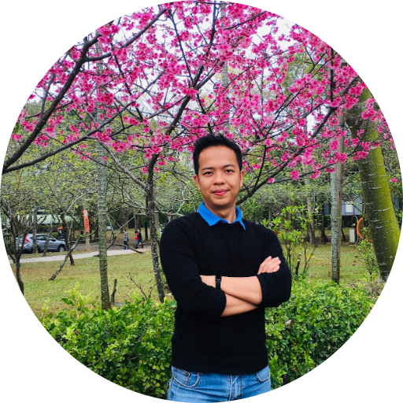
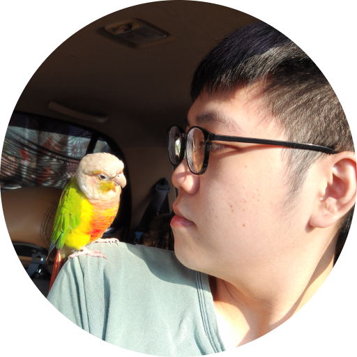

Cyber Information Security (CIS) Lab
網路資安實驗室
EA 301B, CSIE, CCU, Chiayi, Taiwan
Welcom to Cyber Information Security Laboratory (CIS Lab)
Welcome talents and self-motivated students to join our lab.
If you are interested in working in our lab, contact us!
if you are interested in scholarship, please visit our scholarship page!
#Project-2030 #Physical-Layer-Security #Adversarial-attacks #DDoS-Defense #Quantum-Security
CIS Lab is a young security research group in National Chung Cheng University established by Prof. Van-Linh Nguyen. Our research interests consists of Information Security/Advanced authentication, Cybersecurity in wireless communications, space/drone security, quantum security, and vehicular networks.
Some Typical Results
Something may be good
Never give up, for that is just WHEN it is your turn and HOW good you pursue your goals
If now is not the time to do, when? why? Never give an excuse for your fail without asking why?
Working style
Happiness and Fairness
1Responsibility
2Self-motivation
3Lab members
Head of the lab: Van-Linh Nguyen
- Address CSIE, CoE, National Chung Cheng University, Chiayi, 621301, Taiwan
-
e-mail
nvlinh (at) cs.ccu.edu.tw or tuonglinhhm (at) gmail.com
Due to potential system errors, when you send an email to nvlinh (at) cs.ccu.edu.tw, you can cc to my Gmail tuonglinhhm (at) gmail.com too
- Phone +886-5-2720411, ext 33140
- Personal website https://sites.google.com/view/nvlinh
Ph.D students (博士班)
| # | Year enter | Name | Research field | Graduation | Note | |
|---|---|---|---|---|---|---|
| Fall 2022 | Van-Tam Hoang (VN) | tamdhkhtn (at) gmail.com | CBS1 | International student | ||
| Spring 2023 | Yared Abera Ergu (ET) | yared3778 (at) gmail.com | CBS1 | International student |
Master Students (碩士班)
| # | Year enter | Name | Research field | Graduation | Note | |
|---|---|---|---|---|---|---|
| Fall 2022 | M-邱昱智 | tont12345646(at)gmail.com | CBS1 | |||
| Fall 2022 | M-吳奕平 | k94077087(at)gmail.com | CBS1 | |||
|  | Fall 2022 | M-劉祐豪 | derrickliou1(at)gmail.com | CBS2 | ||
| Fall 2022 | M-梁鴻文 | mich803040(at)gmail.com | CBS2 | |||
| Fall 2022 | M-吳法川 | j6z83tj0(at)icloud.com | CBS3 | |||
| Fall 2022 | M-蔡皓評 | cstsaitsaiyo(at)gmail.com | CBS3 | |||
| Fall 2023 (scheduled) |
M-鄭洛旻 | otsy2048(at)gmail.com | (TBD - enroll 6 months later) |
Undergraduate Students (學士班)
| # | Year enter | Name | Research field | Graduation | Note | |
|---|---|---|---|---|---|---|
| Fall 2022 | U-羅政傑 | jackson.loa1(at)gmail.com | CBS1 | |||
| Fall 2022 | U-盧林翼 | titan90280(at)gmail.com | CBS1 | |||
| Fall 2022 | U-Harry Wong Hong-Jun (王鴻鈞) (MY) | harrywonghungjun(at)gmail.com | CBS2 | International student | ||
| Fall 2022 | U-Yu-Chia Lin (林煜家) | aaaee9104(at)gmail.com | CBS2 | |||
| Fall 2022 | U-陳泓奕 | enderjacky96285(at)gmail.com | CBS3 | |||
| Fall 2022 | U-Yan-Hao Wang(王彥皓) | bses30074(at)gmail.com | CBS3 | |||
| Spring 2023 | U-Tarik Kaoutar (MA) | mr.tarik098 (at) gmail.com | CBS4 | International student |
Topics
| #Code | Topic name | Restricted Resources |
|---|---|---|
| CBS1 | Vehicular security and defense (Adversarial attacks, Safe DRL, Misbehavior Detection, Autonomous vehicles, Aerial-assisted vehicular networks) |
Access here |
| CBS2 | Physical layer security (Blind intrusion, Signal surveillance, Moving into Dark building) |
Access here |
| CBS3 | Generative AI-based DDoS defense mechanisms for Imperfect and non-IID Data (Self-supervised Learning, autoDL, DDoS in IIoT networks, DDoS in Intelligent Transportation Systems) |
Access here |
| CBS4 | Blockchain and Quantum security (Blockchain for 6G networks/6G V2X, Quantum-safe Networks) |
Access here |
Publication
Google Scholar , DBLP, Publons
Publications: * indicates the corresponding author
Journal papers (17/18 SCI/SCIE papers)
(NETWORK) Van-Linh Nguyen, Ren-Hung Hwang, Po-Ching Lin, Abhishek Vyas, Van-Tao Nguyen, "Towards the Age of Intelligent Vehicular Networks for Connected and Autonomous Vehicles in 6G", IEEE Network, to appear, 2022, [SCI/SCIE] (SJR Journal Impact Factor 2021: 10.693, Rank 4/156, Q1, in Computer Science and Information systems, Top #3 journal in Telecommunications)
Jia-You Lin, Chia-Che Tsai, Van-Linh Nguyen*, and Ren-Hung Hwang, “Coordinated Multi-Platooning Planning for Resolving Sudden Congestion on the Multi-lane Freeways", Applied Sciences, to appear, 2022, [SCI/SCIE] (SJR Journal Impact Factor 2021: 2.838, Rank 89/172, Q2, in Computer Science and Information Systems) (100% discount APC)
(JISA) Ying-Dar Lin, Ze-Yu Wang, Po-Ching Lin, Van-Linh Nguyen, Ren-Hung Hwang and Yuan-Cheng Lai, “Multi-datasource Machine Learning in Intrusion Detection: Packet Flows, System Logs and Host Statistics”, Journal of Information Security and Applications (Elsevier), 2022, [SCI/SCIE] (SJR Journal Impact Factor 2021: 3.872, Rank 56/156, Q1, in Computer Science, Information Systems).
Lan-Huong Nguyen, Van-Linh Nguyen, and Jian-Jhih Kuo, “Efficient Reinforcement Learning-based Transmission Control for Mitigating Channel Congestion in 5G V2X Sidelink, IEEE Access, Vol. 10., 2022. (SCIE, 35/156, Computer Science, Information Systems, 61/266, Engineering, Electrical & Electronic, Q1).
Ying-Dar Lin, Zi-Qiang Liu, Ren-Hung Hwang, Van-Linh Nguyen, Po-Ching Lin, Yuan-Cheng Lai, “Machine Learning with Variational AutoEncoder for Imbalanced Datasets in Intrusion Detection”, IEEE Access, Vol. 10, 2022. (SCIE, 56/223, Computer Science, Information Systems, Q1)
(S&P) Edy Kristianto, Van-Linh Nguyen*, and Po-Ching Lin, “Decentralized PKI with Blockchain in V2X Communications: Promising or only Euphoria?” IEEE Security & Privacy, 2022, [SCI/SCIE] (SJR Journal Impact Factor 2021: 3.573, Rank 94/334, Q1, in Computer Science).
Lan-Huong Nguyen, Van-Linh Nguyen, and Jian-Jhih Kuo, “Risk-based Transmission Control for mitigating Network Congestion in Vehicle-to-Everything Communications", IEEE Access, vol. 9, pp. 144469-144480, 2021. (SCIE, 35/156, Computer Science, Information Systems, 61/266, Engineering, Electrical & Electronic, Q1).
(T-ITS) Van-Linh Nguyen, Ren-Hung Hwang, and Po-Ching Lin, "Controllable path planning and traffic scheduling for emergency services in the Internet of Vehicles,", IEEE Transactions on Intelligent Transportation Systems (early access), 2021, [SCI/SCIE] (SJR Journal Impact Factor 2021: 6.492, Rank 8/596, Q1, Top #1 SCI journal in Transportation Science & Technology).
(JNCA) Huu-Khoi Bui, Ying-Dar Lin, Ren-Hung Hwang, Po-Ching Lin, Van-Linh Nguyen, and Yuan-Cheng Lai, "CREME: A toolchain of automatic dataset collection for machine learning in intrusion detection", Journal of Network and Computer Applications, Vol. 193, 2021 [SCI/SCIE] (SJR Journal Impact Factor 2021: 7.574, Rank 35/569, Q1, in Computer Science).
(COMST) Van-Linh Nguyen, Po-Ching Lin, Bo-Chao Cheng, Ren-Hung Hwang, Ying-Dar Lin "Security and privacy for 6G: A survey on prospective technologies and challenges", IEEE Communications Surveys and Tutorials, Vol. 23, No. 6, 2021 [SCI/SCIE] (SJR Journal Impact Factor 2021: 25.049, Rank 1/596, Q1, in Computer Science, the highest impact factor journal in all IEEE publications). ((Citation > 60).
Van-Linh Nguyen, Po-Ching Lin, Ren-Hung Hwang, "A Beamforming Signal-Based Verification Scheme for Data Sharing in 5G Vehicular Networks", IEEE Access, Vol. 8, 2020 [SCI/SCIE] (SJR Journal Impact Factor 2020: 3.476, Rank 23/155, Q1, in Computer Science and Information Systems).
(TVT) Van-Linh Nguyen, Po-Ching Lin, and Ren-Hung Hwang, "Enhancing Misbehavior Detection in 5G Vehicle-to-Vehicle Communications", IEEE Transactions on Vehicular Technology, Vol. 69, No. 9, 9417-9430, 2020, [SCI/SCIE] (SJR Journal Impact Factor 2021: 5.978, Rank 29/319, Q1, Top #2 journal in Transportation Science & Technology) ((Citation > 20).
Ren-Hung Hwang, Min-Chun Peng, Chien-Wei Huang, Po-Ching Lin, and Van-Linh Nguyen, “An unsupervised deep learning model for early network traffic anomaly detection", IEEE Access, Vol. 8, 2020, [SCI/SCIE] (SJR Journal Impact Factor 2020: 3.476, Rank 23/155, Q1, in Computer Science and Information Systems). ((Citation > 80).
Ren-Hung Hwang, Min-Chun Peng, Van-Linh Nguyen, and Yu-Lun Chang, “An LSTM-Based Deep Learning Approach for Classifying Malicious Traffic at the Packet Level", Applied Sciences, Vol. 9, No. 16, pp. 3414, 2019, [SCI/SCIE] (SJR Journal Impact Factor 2021: 2.838, Rank 89/172, Q2, in Computer Science and Information Systems). (Citation > 90).
(COMML) Van-Linh Nguyen, Po-Ching Lin, and Ren-Hung Hwang, “Multi-array relative positioning for verifying the truthfulness of V2X messages”, IEEE Communications Letters, Vol. 23, No. 10, pp. 1704-1707, 2019, [SCI/SCIE] (SJR Journal Impact Factor 2021: 3.436, Rank 28/88, Q1, in Telecommunications).
Van-Linh Nguyen, Po-Ching Lin, and Ren-Hung Hwang, "Web Attacks: beating monetisation attempts", Network Security Journal (Elsevier), No.5, 2019. (Scopus), (SJR Journal Impact Factor 2021: 0.900, Rank 195/272, Q2, in Computer Science).
Van-Linh Nguyen, Po-Ching Lin, and Ren-Hung Hwang (2019, Apr), "Energy depletion attacks in Low Power Wireless networks", IEEE Access, Vol. 7, pp. 51915- 51932, 2019, [SCI/SCIE] (SJR Journal Impact Factor 2020: 3.476, Rank 23/155, Q1, in Computer Science and Information Systems). ((Citation > 39).
(NETWORK) Van-Linh Nguyen, Po-Ching Lin, and Ren-Hung Hwang, "MECPASS: Distributed Denial of Service Defense Architecture for Mobile Networks", IEEE Network, Vol. 32, No. 1, pp. 118-124, 2018, [SCI/SCIE] (SJR Journal Impact Factor 2021: 10.693, Rank 4/156, Q1, in Computer Science and Information systems, Top #3 journal in Telecommunications) (Citation > 17).
Conference papers (9)
Van-Linh Nguyen, Lan-Huong Nguyen^, Po-Ching Lin, Ren-Hung Hwang, "Deep Learning-based Localization and Outlier Removal Integration Model for Indoor Surveillance", to appear in IEEE International Conference on Communications Conference (ICC 2023), Rome, Italy.
Van-Linh Nguyen, Harry Wong Hung-Jun^, Yu-Chia Lin^, Ren-Hung Hwang, "Efficient Spatial-Temporal Angle-Delay Analysis Scheme for Massive MIMO Indoor Tracking", to appear in IEEE International Conference on Communications Conference (ICC 2023), Rome, Italy.
Van-Linh Nguyen, Lan-Huong Nguyen^, Ren-Hung Hwang, Jian-Jhih Kuo, Po-Ching Lin, "Efficient Aerial Relaying Station Path Planning for Emergency Event-based Communications", to appear (poster) in IEEE Consumer Communications and Networking Conference (CCNC 2023), Las Vegas, USA.
Chia-Che Tsai, Chia-Yiu Lin, Van-Linh Nguyen, and Ren-Hung Hwang (2022, May) “Efficient traffic coordination for resolving temporary bottlenecks on the multi-lane freeways,”, to appear in IEEE International Conference on Communications (ICC 2022), Seoul, South Korea.
Lan-Huong Nguyen, Ren-Hung Hwang, Po-Ching Lin, Van-Linh Nguyen, JianJhih Kuo (2021, Sep), "Robust Positioning-based Verification Scheme for Enhancing Reliability of Vehicle Platoon Control", The 2021 IEEE 94th Vehicular Technology Conference (VTC2021-Fall).
Ren-Hung Hwang, Van-Linh Nguyen, Chia-Che Tsai, and Po-Ching Lin (2021, Sep), "Platoon-based Vehicle Coordination Scheme for Resolving Sudden Traffic Jam in the IoV Era", The 2021 IEEE 94th Vehicular Technology Conference (VTC2021-Fall).
Van-Linh Nguyen, Po-Ching Lin and Ren-Hung Hwang (2019, Dec), "Physical signal-driven fusion for V2X misbehavior detection", IEEE Vehicular Networking Conference (VNC2019-Fall), Los Angeles, California, USA.
Ren-Hung Hwang, Van-Linh Nguyen, and Po-Ching Lin (2018, Oct), "StateFit: A security framework for SDN programmable data plane model", The 15th International Symposium on Pervasive Systems, Algorithms and Networks (ISPAN), Yichang, China.
Po-Ching Lin, Ping-Chung Li, and Van-Linh Nguyen (2017, Jan), "Inferring OpenFlow rules by active probing in software-defined networks", The 19th International Conference on Advanced Communications Technology (ICACT 2017), Pyongchang, South Korea
- All
- Cybersecurity
- Physical layer security
- Adversarial attacks
- Quantum security
- Intelligent Transportation Systems and Smart city
Lab schedule
Research tips
Teamwork working style suggestions
Lab PPT template
- Our lab ppt
- Overall good template
- Machine learning-related template
- Adversarial attack-related template
- Maths/Algorithm-related template
- A student's sample: PDF view | PPT download
*3-2-1 rule in a slide: 3 key points, 2 figures/annotations (highlight key information), 1 conclusion
*Number of words per slide: no more than 30
How to read a research paper
Encourage to read top/good journal/conference papers instead of yet-reviewed ones
Some selected journal/conference names can be referred here
Top good habits
- Raise questions in the lab/team meetings if you don't understand any stuff. No shy!
- Respect others' opinions/disagree but be ready to debate in a constructive/professional manner
- Before confirming any answer, please make sure you have enough evidence (search if you have not)
- Prepare your presentation in advance with key points, summarized lessons learned, and your own conclusion
- Record your progress with note/tracking (MS/Google Docx, Evernotes,..) or any method that you can reecheck your history records later
- Keep your desktop/working place clean as possible
Scholarship & Financial Support
This page is specified for incoming/international students.
General Scholarship & Financial Support policy in our college
You may also refer other scholarship sources
Besides the above scholarship sources, our lab scholarship policy can support outstanding students as follows
(Depending on the available project budget)
- Ph.D. student: 12,000 NTD/month
- Master student: 6,000 - 8,000 NTD/month
Additionally, for each outstanding achievement such as a top conference/journal paper or a top contest winner, you will receive a research award (8,000 - 20,000 NTD).
For freshman students, the candidate merit is evaluated based on past achievement, English fluency certificate (TOEIC/IELTS/TOEFL), and interview performance.
Average cost of living in CCU: 6,000-8,000 NTD/month
CCU may also provide free accommodation and other scholarship. Please refer here
Please email the head of the lab the following documents
- Curriculum vitae
- Your highest transcript
- English fluency certificate if any
- Publication list, projects you have done (github link), or any proof for your capability
- Study of purpose
MS/Ph.D. scholarship application processing steps in our lab
- The professor checks your submitted (above) documents
- If you received a reply, it means you are a potential candidate
- A video-call interview (Google Meet) will be organized with the candidate before the professor suggests the financial aid level
- One day after the interview, the passed candidates will receive a letter of recommendation (LoR) via email from the professor
- Once you get the LoR, please include it with the application materials below
Once you got the LoR. You are required to submit your application materials + LoR via our university admission portal
The candidate application will be second-reviewed by University Academic Committee. University Academic Committee will give the final decision on admission acceptance and scholarship level.
Besides the highly-recommended process above, you can also ask the professor in our lab for the financial aid level and become your advisor after your admission is accepted.
Questions & Answers
This page is specified for incoming students (freshmen, 新生)
1. Who can I contact if I like to join the lab? 如果新生要問老師可不可以進入實驗室的話，怎麼聯絡呢？
- Please email the head of the lab (Prof. Van-Linh Nguyen) or may ask one of his students.
- Professor often replies within hours. If you got no reply within 2 days, please cc to this secondary email tuonglinhhm (at) gmail.com.
3. Do I need to publish a paper before graduation? 畢業口試前需要有論文發表嗎？
- Ph.D. student: Yes, at least two SCI papers to satisfy CCU-SCIE graduation requirements.
- Master student: No, but encourage to publish a conference paper before the oral defense (畢業口試).
- Undergraduate student (大三): No, but encourage to publish a conference paper before the mini exam (畢業專題).
4. Do I need any special skill to join the lab? 我需要具備什麼能力才能進入實驗室嗎？
No, but we recommend the candidates who know a little bit about ONE of the following fields:
- Proactive, creative, well-motivated character in working
- Computer Networks
- Networking/cybersecurity
- Mathematics and optimization
- AI/Machine Learning/Deep Learning
5. Must I join a project immediately after I join the lab? 加入實驗室後是否需要立即加入實驗室的計劃？
No, but the professor encourages you to join at least a project at the right time.
- Ph.D. student: required to join if you want us to support stipend fee.
- Master student: from the second or third semester.
- Undergraduate student (大三): No, but encourage to join to get experience.
6. Is there any scholarship or finance support during the study period？就讀期間是否有經費或獎學金上的支援?
Yes, depending on the available project budget and contributions, a student may receive a stipend fee.
- Ph.D. student: 12,000 NTD/month
- Master student: 6,000 - 8,000 NTD/month
- Undergraduate student (大三): 6,000 NTD/month
Additionally, for each outstanding achievement such as a top conference/journal paper or a top contest winner, you will receive a research award (8,000 - 20,000 NTD).
Please refer the scholarship page for more information.
Contact
Van-Linh Nguyen (阮文齡)
Room 301B, College of Engineering (I), National Chung Cheng University, Chiayi, 621301, Taiwan
nvlinh@cs.ccu.edu.tw
(please cc to this secondary email tuonglinhhm@gmail.com if no reply ~ 2 days)
Face-to-face meeting (contact via email first)
Lab photos
111-1 年 (10/12 members in our lab)
International internship 2023-2024
The internship program will provide you rich experiences about high-quality education in Taiwan on the cutting-edge technologies
Welcome international internship students to join our lab!
Scholarship for internship
- Monthly support: 15,000 NTD (average monthly expense in CCU: 6,000-8,000 NTD/month)
- Internship period: 2 - 6 months
- Starting date: 2023/5/1 or start no later than 2023/12/30
This period is an estimation since your VISA procedure may take time
The scholarship is sponsored by TEEP program from the Taiwan Ministry of Education (MOE)
Eligibility requirements ( must satisfy (1) and then either (2) or (3))
- Do not hold Taiwanese passport/nationality
- Post-graduate candidates (graduated with a bachelor's degree or higher)
- Undergraduate senior students (third/forth-year)
The applications will be evaluated by the candidate merits (English skills, Background, publications, SOP, CV...)
What we support
- A comfortable seat in our lab
- A PC with Internet
- Lab equipment resources at your reasonable requests
You may like exploring the life at CCU here
What you will do in our lab during the internship period
- Read/survey the international papers on selected topics, for example, B5G/6G Security, Vehicular Security
- Do some programming for mini projects on selected topics
- Suggest novel/creative ideas to enhance assigned mini projects
- Report the results in a professional manner, for example, LateX writing, IEEE Trans format
What you will do at the end of the internship period
- Report your internship results/ complete several surveys
- We highly recommend the candidates who want to continue working with us after the internship (e.g., to apply an MS/Ph.D. program at CCU CoE CSIE)
If you like working with us after the internship period, please discuss with the head of the lab to receive a recommendation for applying new scholarships
If you like the internship, please email the head of the lab the following documents
- Curriculum vitae
- Your highest transcript
- English fluency certificate if any
- Publication list, projects you have done (github link), or any proof for your capability
- Study of purpose
The TEEP application processing steps (The professor means the head of this lab)
- The professor checks your submitted (above) documents
- If you received a reply, it means you are a potential candidate
- The professor will interview the candidates via Google Meet before giving a final decision
- One day after the interview, the passed candidates will receive an acceptance letter via email
- Once you get the acceptance letter, please include it with the application materials below
Once the professor confirms to accept you to join his TEEP program, please finish the following steps
Please fill out your information via this link https://forms.gle/b4N7ELtSaZRTuPMN7 (for program management)
Regarding the field “Research interest of the applicant’s advisor”, please enter “P1-AI for Security and Security for AI in 5G/6G, Prof. Van-Linh Nguyen"
After completing the form, please send the following application materials to coleng_dia@ccu.edu.tw and cc to the professor (zip all documents to one file before sending) with the subject title "Application for 2023 CCU/CoE International Internship"
- Online Application Form (export to PDF)
- Curriculum Vitae in PDF format
- Official Transcripts
- Letter of Recommendation in PDF format
- Certificate of language proficiency
- Research Plan in PDF format (optional)
- Copy of Passport (Bio-page) (required to fill out a form of Ministry of Education (MoE) to issue a certificate for your VISA apply)
- Head-shot Photo in JPG format (required)
- Other Supplementary Documents(Optional)
TEEP Coordinator will check the application one more time and give detailed guidance to the scholarship recipient on how to apply for Internship VISA